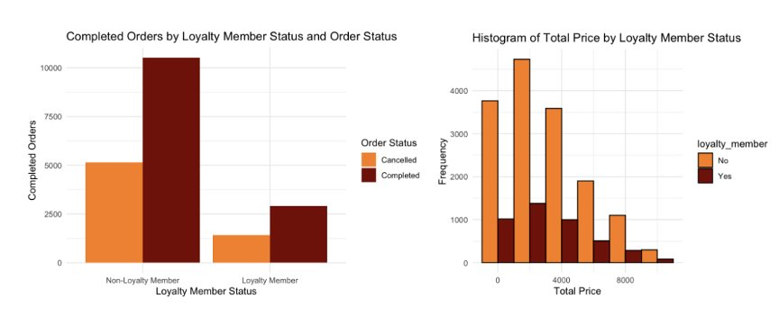
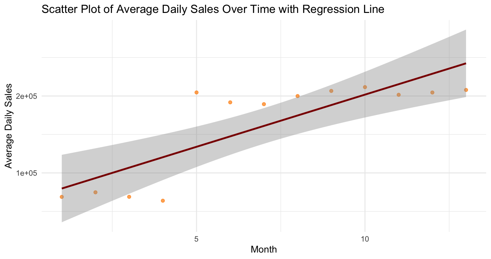

R Project
Advanced analysis of 20,000 simulated consumer electronics transactions, using hypothesis testing, correlation analysis, and regression modeling to uncover patterns in sales, ratings, and revenue growth over time.
Overview
Three questions guided the analysis, each pairing a hypothesis test with correlation and regression to assess predictive power across different variable relationships.
Q1
How well can we predict total price based on quantity? What about based on unit price and quantity?
Q2
How well can we predict rating based on unit price within a single product type? Are gender, order status, or loyalty status useful predictors?
Q3
How do average daily sales per month vary over time? Can we predict average daily sales in future months?
Exploratory Data Analysis
Before analysis, a full EDA was conducted across all key variables including age, rating, gender, loyalty status, product type, order status, total price, unit price, quantity, and add-on totals. Outliers beyond ±3 z-scores were removed from total price and add-on totals.
One gender NA was removed. Add-on purchase NAs were recoded to "None." Extreme outliers exceeding ±3 standard deviations were removed for total price and add-on totals, resulting in meaningful changes to those distributions.
Age, total price, and add-on totals appeared mostly normal. Ratings, unit prices, and quantity did not follow normal distributions. Cleaning had little to no impact on normality across variables.
Men completed more orders than women. Purchasing patterns across age groups (18 to 80) were nearly identical, with minimal differences in mean total price or order frequency by age.
Loyalty and non-loyalty members completed orders at roughly the same rate (~67%). Average unit prices varied considerably by product type, with smartwatches averaging the highest mean price and headphones the lowest.
Results
Hypothesis tests, correlations, and regression models were applied to each question. Q3 was the primary analytical focus.
Two-sample t-tests confirmed statistically significant differences in total price between high and low quantity groups and high and low unit price groups (p < 0.05 for both). Quantity alone explained 42% of variation. Adding unit price dramatically improved predictive power, explaining 87% of variation.
Within the smartphone category, unit price and rating showed a strong negative correlation (r = -0.69). A regression using unit price alone explained ~47% of rating variation. Adding loyalty status offered a slight improvement. Gender, order status, and loyalty membership showed no statistically significant relationship with ratings individually.
An independent samples Z-test confirmed that average daily sales differed significantly on or before April 24, 2024 compared to after (z ≈ -13.29, p ≈ 2.2e-16). Correlation analysis showed a strong positive relationship between month progression and average daily sales (r ≈ 0.82). Regression found sales grew by approximately $13,561 per month (R² = 0.65), though the actual pattern reflected a sharp jump in January 2024 rather than gradual growth.
Visualizations
Two visualizations from the EDA and Q3 analysis illustrating loyalty member purchasing patterns and the regression trend in average daily sales over time.
Orders and Spending by Loyalty Status

Bar chart and histogram comparing completed vs. cancelled orders and total price distributions between loyalty and non-loyalty members. Both groups show nearly identical order completion rates (~67%) and similar spending patterns.
Regression: Sales Over Time

Scatter plot with regression line showing the upward trend across 13 months. The regression captures the overall direction, though the actual pattern reflects a sharp discontinuity rather than gradual growth.
Selected Code
Selected code from the EDA and Q3 analysis, covering data cleaning, descriptive statistics, the Z-test, and regression with visualizations.
Removes the invalid gender entry, recodes add-on NAs, and strips outliers beyond ±3 z-scores from total price and add-on total.
# Remove invalid gender entry
sales_clean <- sales %>%
filter(gender != "#N/A")
# Recode add-on NAs to "None"
sales_clean <- sales_clean %>%
mutate(add_ons_purchased = ifelse(is.na(add_ons_purchased), "None", add_ons_purchased))
# Remove total_price outliers beyond +/- 3 z-scores
# Max Z score = 3.228527 > 3
sales_clean <- sales_clean %>%
filter(abs((total_price - mean(total_price, na.rm = TRUE)) / sd(total_price, na.rm = TRUE)) < 3)
# Remove add_on_total outliers beyond +/- 3 z-scores
# Max Z score = 3.986791 > 3
sales_clean <- sales_clean %>%
filter(abs((add_on_total - mean(add_on_total, na.rm = TRUE)) / sd(add_on_total, na.rm = TRUE)) < 3)Builds a tidy summary statistics table across all key variables using pivot_longer and pivot_wider.
sales_sumstat_clean <- sales_clean %>%
summarise(
age_mean = mean(age, na.rm = TRUE), age_median = median(age, na.rm = TRUE),
age_sd = sd(age, na.rm = TRUE), age_max = max(age, na.rm = TRUE),
age_min = min(age, na.rm = TRUE),
total_price_mean = mean(total_price, na.rm = TRUE),
total_price_median = median(total_price, na.rm = TRUE),
total_price_sd = sd(total_price, na.rm = TRUE),
total_price_max = max(total_price, na.rm = TRUE),
total_price_min = min(total_price, na.rm = TRUE)
# ... repeated for rating, unit_price, quantity, add_on_total
) %>%
pivot_longer(everything(),
names_to = c("variable", "statistic"),
names_pattern = "(.*)_(mean|median|sd|max|min)$",
values_to = "value") %>%
pivot_wider(names_from = variable,
values_from = value)Tests whether average daily sales differ significantly before and after the median purchase date of April 24, 2024. Includes automatic decision output and 95% confidence interval.
# H0: Average daily sales are the same on or before April 24, 2024 vs. after
# H1: Average daily sales differ significantly — Alpha = 0.05
totalba_alpha <- 0.05
total_before_n <- length(daily_totals_before$daily_total)
total_after_n <- length(daily_totals_after$daily_total)
total_before_mean <- mean(daily_totals_before$daily_total)
total_before_sd <- sd(daily_totals_before$daily_total)
total_after_mean <- mean(daily_totals_after$daily_total)
total_after_sd <- sd(daily_totals_after$daily_total)
totalba_z_stat <- (total_before_mean - total_after_mean) /
sqrt((total_before_sd^2 / total_before_n) + (total_after_sd^2 / total_after_n))
totalba_cv <- qnorm(1 - (totalba_alpha / 2))
totalba_p_value <- 2 * (1 - pnorm(abs(totalba_z_stat)))
cat("Z-statistic:", totalba_z_stat, "P-value:", totalba_p_value)
if (abs(totalba_z_stat) > totalba_cv) {
print("Reject the NULL hypothesis - prices are significantly different")
} else {
print("Do NOT Reject the NULL Hypothesis - no significant difference")
}
# 95% Confidence Interval
totalba_se <- sqrt((total_before_sd^2 / total_before_n) + (total_after_sd^2 / total_after_n))
totalba_mean_diff <- total_before_mean - total_after_mean
totalba_ci_lower <- totalba_mean_diff - (totalba_cv * totalba_se)
totalba_ci_upper <- totalba_mean_diff + (totalba_cv * totalba_se)
# Z ≈ -13.29, p ≈ 2.2e-16 → Reject null hypothesisBuilds monthly average daily sales data, fits a linear regression with month index as the predictor, and produces both a scatter plot with regression line and a bar chart of monthly averages. Includes predictions for future months.
# Build monthly average daily sales dataset
daily_sales <- sales_clean %>%
group_by(purchase_date) %>%
summarise(daily_total = sum(total_price, na.rm = TRUE)) %>%
mutate(year_month = format(purchase_date, "%Y-%m")) %>%
group_by(year_month) %>%
summarise(
monthly_total = sum(daily_total, na.rm = TRUE),
average_daily_total = mean(daily_total, na.rm = TRUE)
) %>%
mutate(month_index = row_number())
# Correlation
cov_time <- cov(daily_sales$month_index, daily_sales$average_daily_total)
cor_time <- cor(daily_sales$month_index, daily_sales$average_daily_total)
# Covariance = $205,676.30 | r ≈ 0.82
# Regression model
reg_time <- lm(average_daily_total ~ month_index, data = daily_sales)
summary(reg_time)
# Slope = $13,561/month | y-intercept = $66,158 | R² = 0.6489
# Scatter plot with regression line
ggplot(daily_sales, aes(x = month_index, y = average_daily_total)) +
geom_point(color = "darkorange", alpha = 0.7) +
geom_smooth(method = "lm", color = "darkred") +
labs(title = "Scatter Plot of Average Daily Sales Over Time with Regression Line",
x = "Month", y = "Average Daily Sales") +
theme_minimal()
# Bar chart of monthly averages
ggplot(daily_sales, aes(x = year_month, y = average_daily_total)) +
geom_bar(stat = "identity", fill = "darkorange") +
labs(title = "Average Daily Sales Per Month",
x = "Month", y = "Average Daily Sales") +
theme_minimal() +
theme(axis.text.x = element_text(angle = 45, hjust = 1))
# Predictions for future months 14-26
future_months <- data.frame(month_index = c(14:26))
months_predict_CI <- predict(reg_time, newdata = future_months, interval = "confidence")
months_predict_PI <- predict(reg_time, newdata = future_months, interval = "prediction")